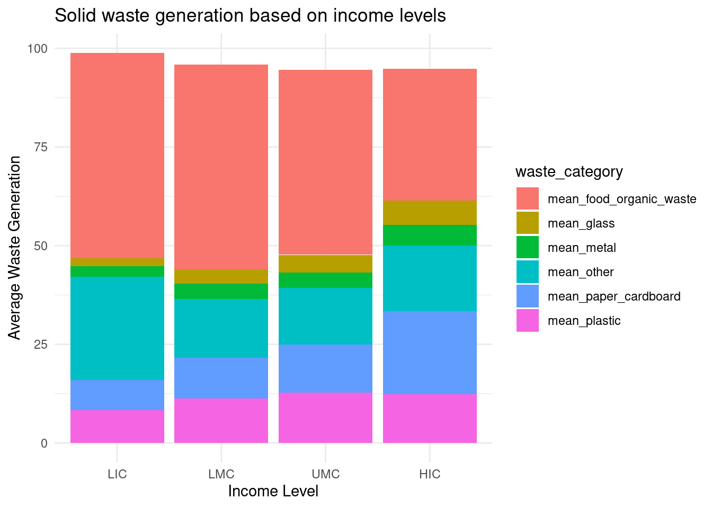

The management of solid waste presents a pressing global challenge amidst rapid population growth and urbanization affecting every single person in the world.
This report offers a rather quick examination of solid waste generation, encompassing variables such as region, income level, population, GDP, and proportions of waste for the selected countries.
By examining the trends, we aim to provide insights for better waste management policies and practices, contributing to global efforts for environmental sustainability.
Methods
The data utilized in this report was obtained from a variety of sources, including international organizations, and academic research databases. Data on solid waste generation, population, and GDP for the selected countries were collected from reputable statistical databases such as the World Bank and the United Nations.
Additionally, information on regional classifications and income levels was sourced from recognized institutions like the World Economic Forum and the International Monetary Fund. All data were carefully curated and cross-referenced to ensure accuracy and reliability in our analysis of solid waste generation trends and patterns.
Many of the lower-income cities and countries have data on waste composition which is more than 10 years old and may not adequately reflect current consumption patterns, for example, consumption of plastic packaging and electronic equipment (David C Wilson et al., 2012). This presents a big challenge in the data analysis field
Results
During analysis, it revealed significant variations in solid waste generation across different regions and income levels. Some of the comparisons are represented below.
income_levels <-c("LIC", "LMC", "UMC", "HIC")pivoted_summarised_on_income$income_id <-factor(pivoted_summarised_on_income$income_id, levels = income_levels)ggplot(data = pivoted_summarised_on_income,mapping =aes(x = income_id,y = average_values,fill = waste_category)) +geom_col() +labs(title ="Solid waste generation based on income levels",x ="Income Level", y ="Average Waste Generation") +theme_minimal()

Figure 1: Relationship between solid waste generation and income level
Through Figure 1, one can observe the relationship between income level and average solid waste generation. The data suggests that as income level rises, there is an accompanying decrease in the average amount of solid waste generated. This is potentially due to higher investments in the barriers to solid waste generation through better policies and innovation financing. This reduces the amount of disposable goods among individuals with higher incomes.
Solid waste generation and composition varies differently according to income level (as shown in Figure 1), region, urbanization levels, industrial activities, cultural practices, and lifestyle patterns. Additionally, climate and geographic features can influence waste composition and generation rates, with coastal areas or tourist destinations often experiencing unique waste challenges.
The regional variation shown in Table 1 can give a better view of differences and bring a view of the challenges that may be met in the process of solid waste management if such variations are not catered for.
Figure 2: Solid waste generation and composition for the different regions
The Figure 2 illustrates the distribution of solid waste generation across different regions. By visualizing the proportion of waste generated by each region, we can discern regional disparities and prioritize targeted waste management strategies to address environmental concerns effectively. This regional differences form a basis for policy making aligning it towards more region-specific waste management solutions.
The summary statistics for Sub-Saharan Africa are shown in the Table 2 and Table 3 below
Table 3: Standard deviation for the solid waste generation in Sub-Saharan Africa
Africa's deviation in solid waste composition
count
food_organic_waste
glass
metal
other
paper_cardboard
plastic
20
24.9
1.9
3.6
22.3
5.5
6.0
With the spatial-temporal variations and expected increases(Silpa Kaza & Perinaz Bhada-Tata, 2018) in solid waste generation, its management requires all relevant stake holders to be on board from producers to consumers and all the institutions(David C Wilson et al., 2015).
Conclusions
Understanding the proportions of different types of waste within the overall waste stream is crucial for developing targeted interventions. By identifying the dominant waste categories, resources can be effectively allocated to implement waste management strategies that prioritize the most significant contributors to the waste stream.
Effective management of solid waste is imperative to mitigate environmental pollution, conserve natural resources, and promote circular economy principles. Implementing integrated waste management systems, emphasizing recycling and composting, and fostering partnerships between government, industry, and communities are essential for achieving sustainable waste management practices and safeguarding the health and well-being of current and future generations.
References
David C Wilson, L. R., Anne Scheinberg, C. A. V., & Alabaster, G. (2012). Comparative analysis of solid waste management in 20 cities. Waste Management & Research: The Journal for a Sustainable Circular Economy. https://doi.org/https://doi.org/10.1177/0734242X12437569
David C Wilson, L. R., Prasad Modak, R. S., Ainhoa Carpintero Rogero, C. A. V., Mona Iyer, O. S., & Cannon, T. (2015). Global waste management outlook.
Silpa Kaza, L. Y., & Perinaz Bhada-Tata, F. V. W. (2018). What a waste 2.0: A global snapshot of solid waste management to 2050.
![]()